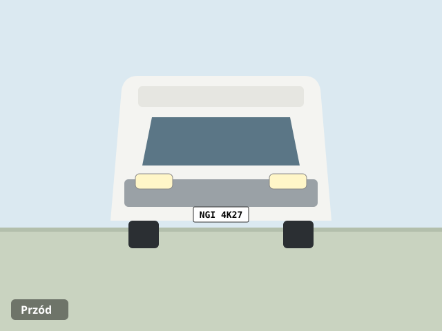
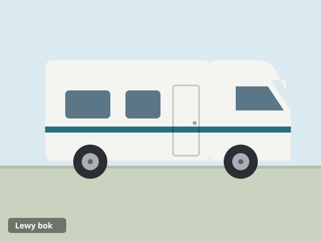
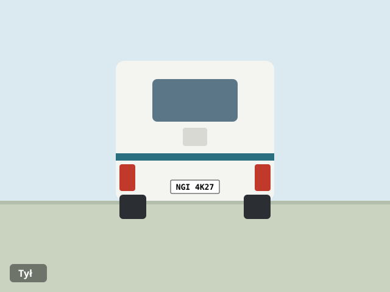
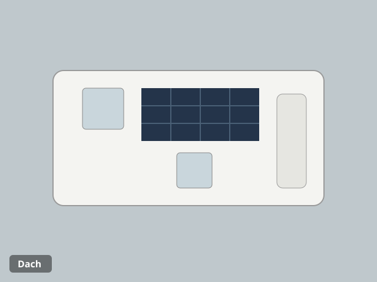
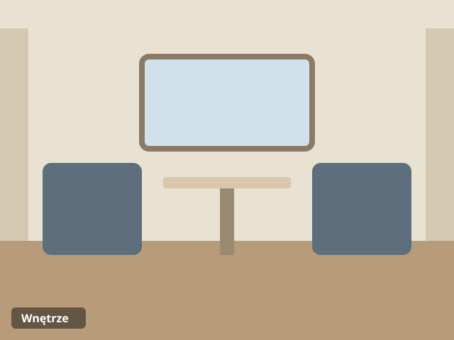
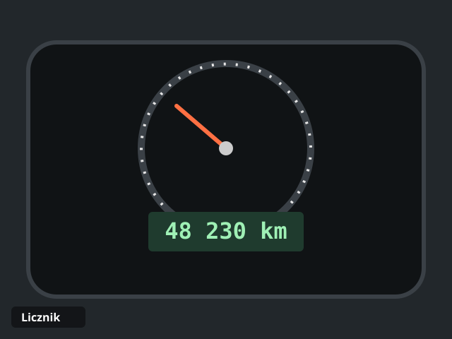

Protokół zwrotu
R-2027-014 · Ducato alkowa · NGI 4K27
Anna Kowalska · zwrot 21.07.2027, 16:00
Zrób zdjęcia tych samych ujęć co przy wydaniu. Obok każdego widzisz zdjęcie z protokołu wydania.
Zdjęcia z wydania: przykładowe.
Przód
wydanie / zwrot
Lewy bok
wydanie / zwrot
Tył
wydanie / zwrot
Prawy bok
wydanie / zwrot

Do wyceny — Cennik poz. 21
Dach
wydanie / zwrot
Wnętrze
wydanie / zwrot
Licznik
wydanie / zwrot
Paliwo
wydanie / zwrot
Lista z protokołu wydania. Wpisz, ile sztuk wróciło.
Klucze i dokumenty
| Pozycja | Wyd. | Zwr. |
|---|---|---|
| Kluczyk do pojazdu (komplet)Brak 1 kompletu · Cennik poz. 24 — 300 zł | 2 | |
| Klucz do schowków | 1 | |
| Dowód rejestracyjny | 1 | |
| Potwierdzenie ubezpieczenia OC/AC z OWU | 1 | |
| Zielona karta | 1 |
Na zewnątrz
| Pozycja | Wyd. | Zwr. |
|---|---|---|
| Stopień wejściowy | 1 | |
| Kabel zasilający 230 V | 2 | |
| Przedłużacz | 1 | |
| Butla z gazem | 2 | |
| Wąż do wody | 1 | |
| Konewka | 1 | |
| Kliny poziomujące | 2 | |
| Młotek | 1 | |
| Śmietnik składany | 1 | |
| Pasy ściągające | 2 | |
| Markiza | 1 | |
| Gaśnica | 1 |
Wnętrze
| Pozycja | Wyd. | Zwr. |
|---|---|---|
| Koc | 4 | |
| Farelka | 1 | |
| Wentylator | 1 | |
| Kuchenka elektryczna | 1 | |
| Garnek | 1 | |
| Patelnia | 1 | |
| Sitko | 1 | |
| Zestaw sztućców i talerzy | 1 | |
| Zmiotka i szufelka | 1 | |
| Kaseta toalety | 1 |
Dodatkowe płatne (Cennik poz. 1–2)
Przedsionek z podłogą — niezamówiony · Zestaw 4 krzeseł i stołu — niezamówiony
Materiały eksploatacyjne
Kontrola według cennika
Obok każdej pozycji kwota, która zostałaby naliczona.
Cennik poz. 3
Gdyby nie: 100 zł — oddanie brudnego, nieposprzątanego wnętrza
Cennik poz. 4
Gdyby nie: 250 zł — sprzątanie po zwierzętach z praniem pokrowców
Cennik poz. 5
Gdyby nie: 100 zł — brudna kaseta toalety chemicznej
Cennik poz. 11
Gdyby nie: 4 000 zł — złamanie zakazu palenia
Cennik poz. 20
Gdyby nie: 500 zł — wlanie do zbiornika innej substancji
21.07.2027, 16:00 — umowa: do 21.07.2027, 16:00
Gdyby nie: 1 950 zł za każdą rozpoczętą dobę opóźnienia; zwrot w dzień wolny lub 17:00–20:00 — 100 zł (Umowa II.5, Regulamin IX)
| Pozycja | Cennik | Kwota |
|---|---|---|
| Brak paliwa 22 l × 8 zł + 100 zł za tankowanie | poz. 30 | 276 zł |
| Brak kompletu kluczyków wydano 2, zwrócono 1 | poz. 24 | 300 zł |
| Potrącenia razem | 576 zł | |
| Rysa prawy bok ok. 30 cm, do podkładu, wysokość drzwi | poz. 21 | do wyceny |
- Kaucja (gotówka, 11.07.2027)
- 5 000 zł
- Potrącenia
- − 576 zł
- Rysa prawy bok (poz. 21)
- do wyceny
- Wstępnie do zwrotu
- 4 424 zł
Najemca odpowiada też za szkody z okresu najmu ujawnione po zwrocie (Regulamin, rozdz. IX).
- Pojazd
- Ducato alkowa, NGI 4K27
- Zwrot
- 21.07.2027, 16:00 — w terminie
- Przebieg
- 49 870 km (+1 640 km)
- Paliwo
- 6/8 (przy wydaniu 8/8)
- Zdjęcia
- 8 z 8, przed / po
- Uszkodzenia
- nowa rysa na prawym boku — do wyceny
- Wyposażenie
- brak 1 kompletu kluczyków
- Kontrola
- bez uwag
- Potrącenia
- 576 zł + rysa do wyceny
- Kaucja
- 5 000 zł, wstępnie do zwrotu 4 424 zł
Protokół zwrotu podpisany, PDF wysłany do obu stron
Kaucja do rozliczenia: wstępnie 4 424 zł do zwrotu, rysa do wyceny. Termin zwrotu kaucji: 28.07.2027.
Wróć do rezerwacji